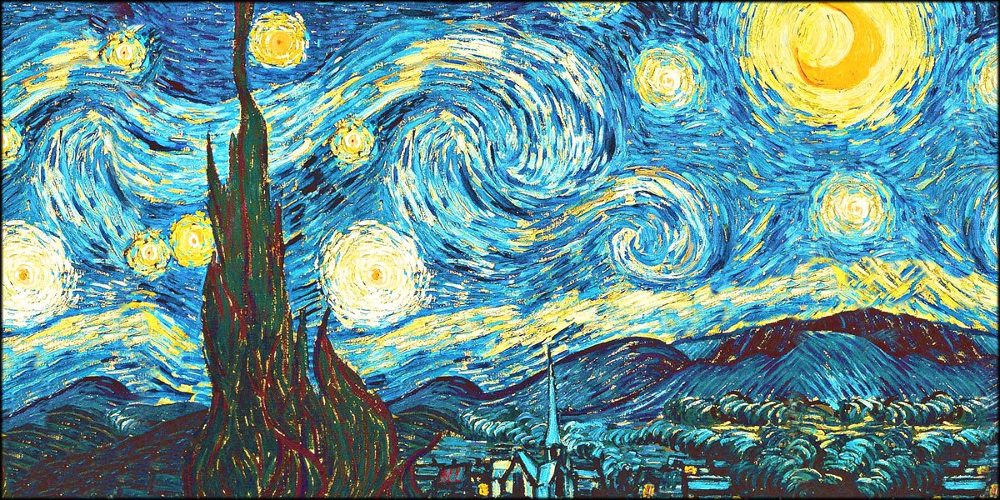
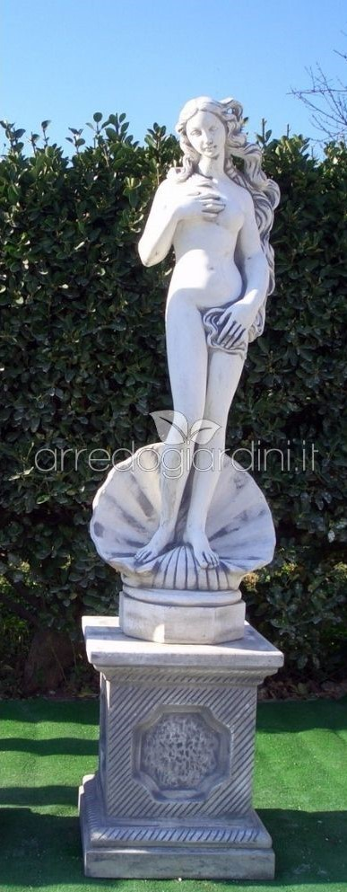

1. Il dipinto che mi ha colpito di più

Un'opera d'arte affascinente vista nella galleria principale.
Questo dipinto mi ha catturato per i suoi colori intensi. È come se raccontasse una storia senza parole.
2.Un'antica scultura

Scultura romana in marmo esposta nella sala archeologica.
La scultura era alta quasi due metri e mostrava la nascita di Venere. I dettagli del viso e dei capelli erano incredibilmente realistici.
Le cose che ho imparato oggi:
Le statue romane venivano spesso dipinte a colori vivaci
Molti dipinti nascondono simboli e significati nascosti
Ogni opera ha una storia unica